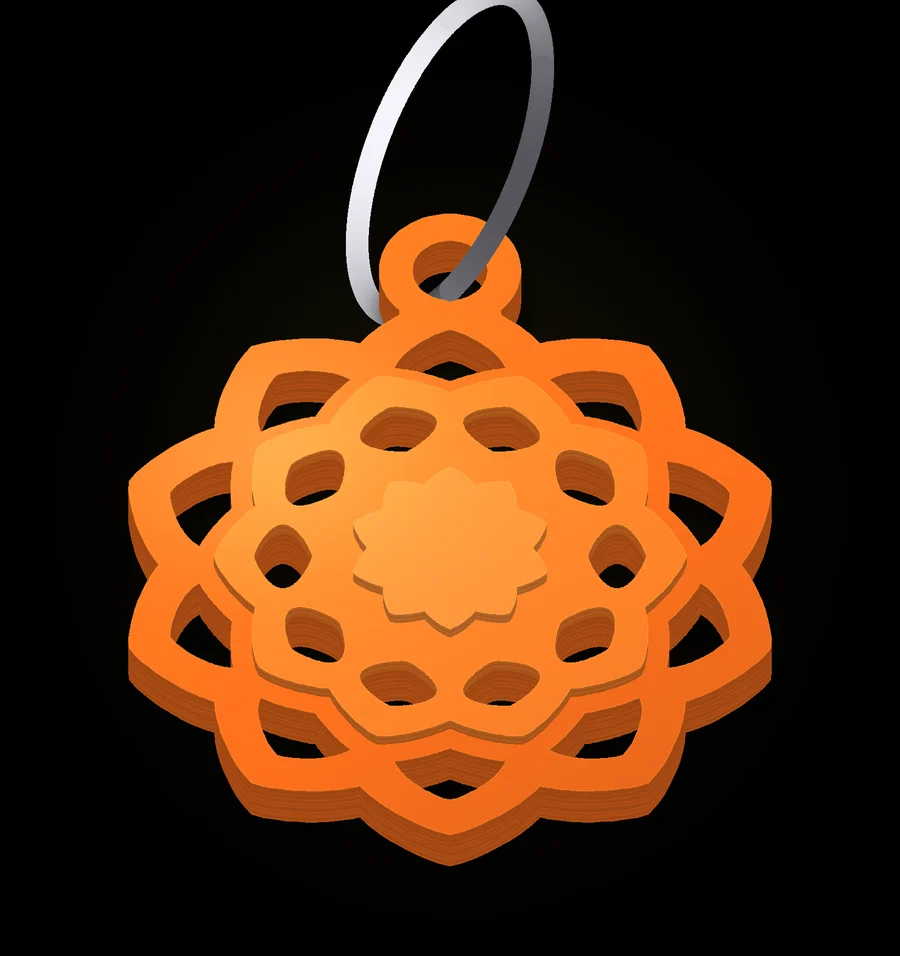
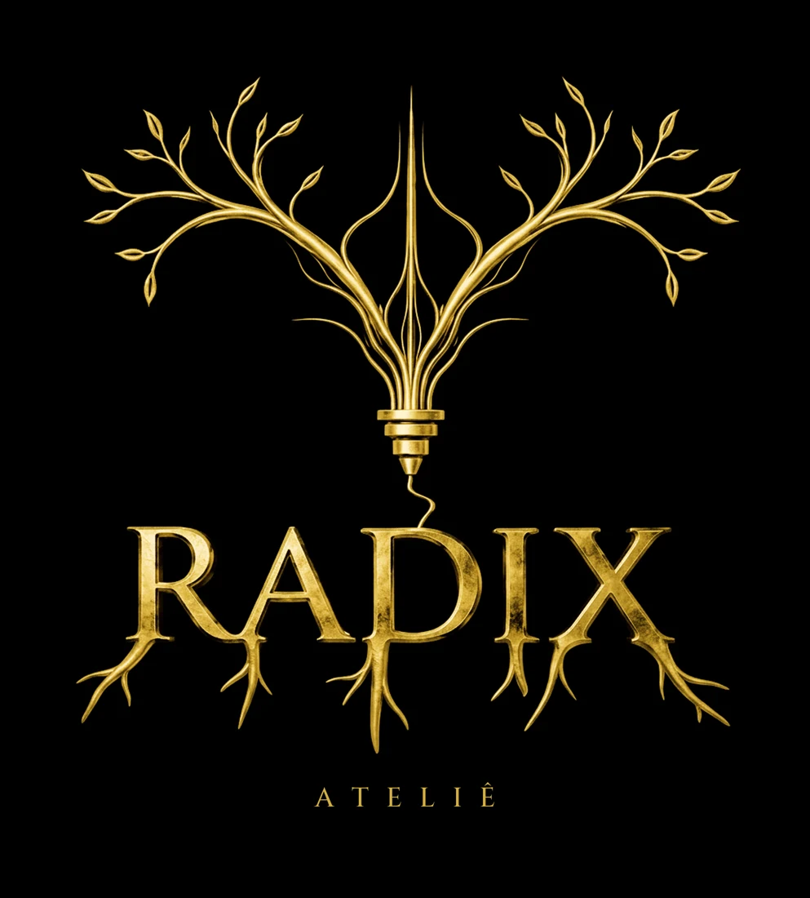

Chaveiros personalizados
Com o logo da clínica, o nome do salão ou um número para cada armário. Leves e resistentes para o uso diário.
Dá para combinar duas cores na mesma peça, como o número em preto no verso de um chaveiro laranja.
Chaveiros, mimos e brindes personalizados para clínicas de estética e salões. Desenho próprio e produção em Florianópolis.

Cada peça é desenhada para o seu pedido. Você vê a simulação em 3D antes de qualquer impressão.

Com o logo da clínica, o nome do salão ou um número para cada armário. Leves e resistentes para o uso diário.
Dá para combinar duas cores na mesma peça, como o número em preto no verso de um chaveiro laranja.

Lembranças para entregar no atendimento ou em datas especiais. Podem virar ímã de geladeira, abridor de latinha ou levar uma etiqueta NFC: a cliente encosta o celular e abre o seu Instagram ou WhatsApp.

Marcadores de livro, enfeites, suportes e o que mais você imaginar, em peças de até 25 cm. Se você tem uma ideia, a gente desenha.
Pelo WhatsApp, com o seu logo, uma foto ou uma referência que você goste.
Você recebe a simulação em 3D, com medidas e cores, e aprova antes de imprimir.
Em pedidos maiores, imprimimos uma peça de teste para você ver e pegar na mão.
Com o desenho aprovado, produzimos o lote. Prazo e forma de entrega combinados no orçamento.
Trabalhamos com PETG, um plástico resistente da mesma família do usado em garrafas de água. São 16 opções, entre sólidas, translúcidas e especiais.
O preço por peça diminui conforme a quantidade do pedido. Mande quantas peças você precisa e a data em que quer receber, que respondemos com o orçamento.
Conte o que você precisa. Respondemos com ideias, cores e orçamento.